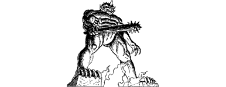

200
The dark tunnel descends to a titanic circular hall which is lit by a lava-filled vent at its centre. Tunnels radiate from this hall in every direction, like the spokes of an infernal wheel, their destinations mere pinpoints of flame in the far distance. The air here is thick and cloying. It is choked by sulphur and other foul discharges of noisy engines located deep in the bowels of Kaag. The pressure of this tainted atmosphere is forever changing, causing you momentarily to lose your balance and stumble when first you enter the central hall.
{kind=link}

Before you, astride the vent, a colossal idol looms up against the crimson light like some supernatural giant forged of steel and stone. Warily you pass beside one of its huge, taloned feet, half expecting it to animate suddenly and come crashing down upon you as if you were a lowly insect. Fortunately, the foot remains immobile and you are able to leave by a triangular-shaped tunnel, the largest of those which radiate from this hall.
Other passages branch off this tunnel, spaced at regular intervals of one hundred paces. You detect movement taking place in several of these sub-tunnels and, when at last your natural curiosity prompts you to stop and observe one (using your Magnakai skills to magnify your vision), you detect that it is occupied by Nadziranim. These mysterious sorcerers are gifted in the black arts of Right-handed magic and, before their demise, they slavishly assisted the Darklords of Helgedad. These particular Nadziranim are busy at slime-filled vats, engaged in the harvesting of Giak spawn, a process that at first fascinates then rapidly repulses you. Sickened by what you have seen, you hurry away towards a distant junction where a narrower tunnel crosses from left to right. As you approach the junction, you feel the skin on your arms and the nape of your neck tingle with a premonition of peril. The sensation soon passes, but you are left with an awareness that a greater danger lurks somewhere nearby.
If you wish to turn left at the junction and continue, turn to 156.
If you choose to turn right, turn to 126.